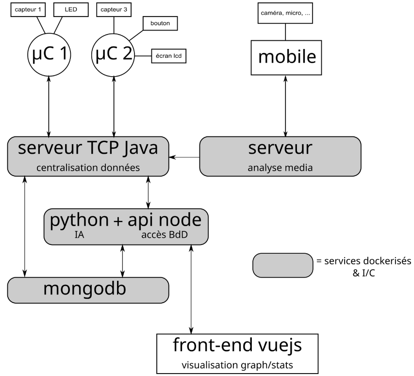

Assistant Intelligent du Sommeil
Ce projet de fin d'études vise à concevoir une solution complète (hardware et software) pour aider les utilisateurs à analyser et améliorer la qualité de leur sommeil. L'application collecte des données environnementales et physiologiques en temps réel via des objets connectés, les analyse grâce à l'Intelligence Artificielle, et restitue des recommandations personnalisées via une interface web.
Architecture Technique
Le défi principal réside dans l'orchestration de multiples services hétérogènes (Java, Python, Node.js) communiquant entre eux et avec des objets connectés (ESP32). L'ensemble est déployé via Docker avec une chaîne CI/CD.
 Figure 1 : Architecture globale du système (Microservices & IoT)IoT & Collecte
- Microcontrôleurs ESP32
- Programmation Arduino
- Capteurs (Température, Son, CO2)
- Communication TCP Sockets
Backend Central (Java)
- Serveur TCP Multi-threadé
- Centralisation des données capteurs
- Architecture modulaire (Drivers)
Analyse & IA (Python/Node)
- Scripts Python pour l'IA
- API REST (Node.js/Express)
- Base de données MongoDB
Frontend (Vue.js)
- Vue 3 + Vue Router
- Visualisation Graphique (DataViz)
- Authentification & Gestion profils
Fonctionnalités Clés
- Monitoring en temps réel : Récupération des données capteurs via le serveur Java.
- Analyse intelligente : Algorithmes Python analysant les cycles de sommeil (mouvements, bruits).
- Réveil optimal : Calcul du meilleur moment pour réveiller l'utilisateur sans couper un cycle de sommeil.
- Tableau de bord : Interface web responsive pour visualiser l'historique des nuits et les scores de qualité.
DevOps & Méthodologie
Pour simuler un environnement professionnel, nous appliquons des contraintes strictes de développement :
- Conteneurisation : Tous les services (Java, Node, Mongo) sont dockerisés.
- CI/CD : Intégration continue via Jenkins/GitLab pour automatiser les tests et le build.
- Versioning : Gestion stricte des branches (Dev/Prod) sur Git.